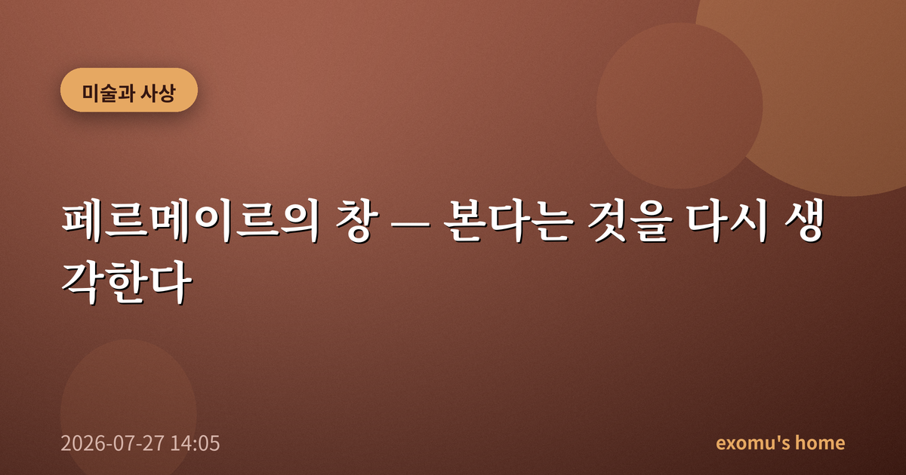
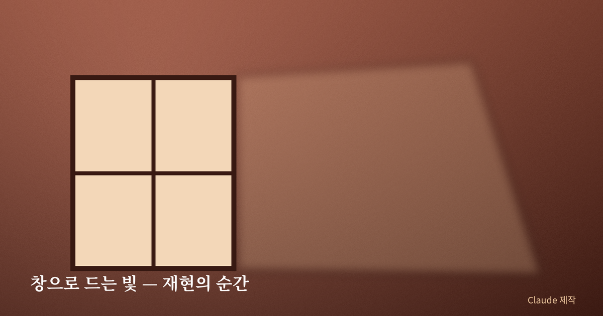
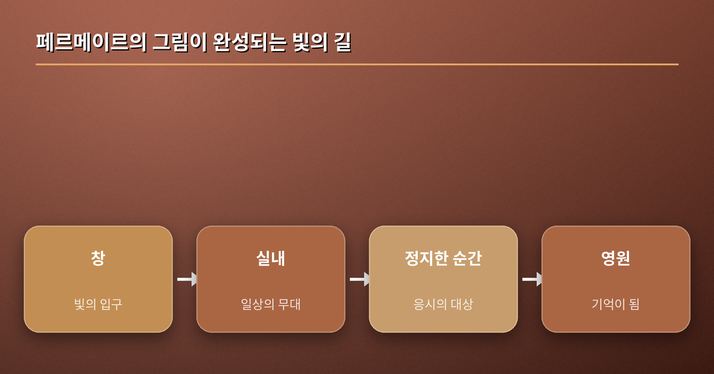
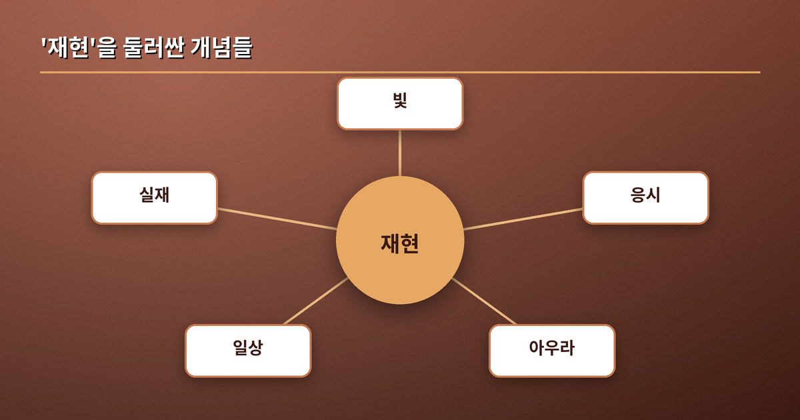
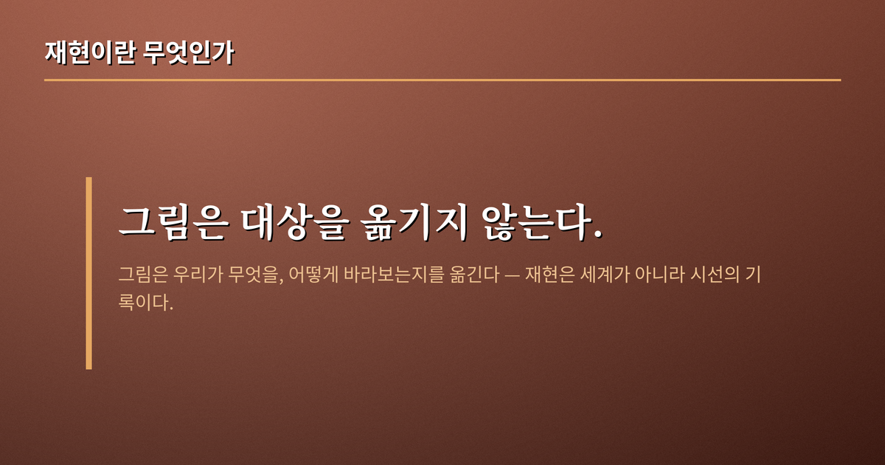

페르메이르의 창 — 본다는 것을 다시 생각한다

미술관에서 페르메이르의 작은 그림 앞에 오래 멈춰 선 적이 있다. 특별한 사건도, 영웅도 없었다. 창가에서 편지를 읽거나 우유를 따르는 한 사람이 있을 뿐이었다. 그런데 나는 좀처럼 발을 떼지 못했다. 무엇이 이 조용한 실내를 이토록 붙드는가. 오늘은 그 물음을 실마리 삼아, '본다는 것'과 '재현한다는 것'을 다시 생각해 보려 한다.
빛이라는 주인공
페르메이르의 그림에서 진짜 주인공은 인물이 아니라 창으로 드는 빛이다. 왼편 어딘가의 창에서 들어온 빛이 벽을 타고 흐르고, 얼굴과 옷감과 사물 위에 부드럽게 내려앉는다. 그는 사건이 아니라 순간을, 이야기가 아니라 상태를 그렸다. 그래서 화면은 늘 어딘가 정지해 있는데, 그 정지 안에서 시간은 오히려 더 또렷하게 느껴진다. 아무 일도 일어나지 않는 장면이 이렇게 충만할 수 있다는 사실이 나에게는 늘 놀랍다.
그가 다룬 소재들은 하나같이 사소하다. 편지 한 장, 우유 한 줄기, 창가에 선 한 사람. 당대의 미술이 신화와 역사, 권력자의 초상을 향할 때 그는 이름 없는 이들의 조용한 실내로 시선을 돌렸다. 이 선택 자체가 하나의 태도다. 위대함은 저 멀리 특별한 사건에 있는 것이 아니라, 지금 내 곁을 흐르는 평범한 시간 속에 이미 깃들어 있다는 태도. 그는 그 평범함을 거룩할 만큼 진지하게 응시함으로써, 우리가 매일 스쳐 지나가는 순간에도 응시할 가치가 있음을 조용히 주장한다.

재현이란 무엇인가
여기서 오래된 질문이 고개를 든다. 그림은 대상을 '있는 그대로' 옮기는 일일까. 나는 아니라고 생각한다. 재현은 세계를 복제하는 작업이 아니라, 화가가 무엇을 어떻게 바라보았는지를 옮기는 작업이다. 페르메이르가 그린 것은 우유를 따르는 여인이 아니라, 그 평범한 순간을 응시할 만한 것으로 바꾸어 낸 그의 시선이다. 우리가 그림 앞에서 멈추는 이유는 대상이 대단해서가 아니라, 대단하지 않은 것을 대단하게 바라보는 방식을 그가 우리에게 빌려주기 때문이다.
페르메이르가 광학 장치의 도움을 받았을 것이라는 오랜 추정도 이 맥락에서 흥미롭다. 어두운 방에 작은 구멍을 내면 바깥 풍경이 반대편 벽에 거꾸로 맺히는 '카메라 옵스쿠라'가 그것이다. 설령 그가 그런 장치를 참고했다 해도, 그 사실이 그림의 가치를 깎지는 않는다. 도구는 무엇을 볼지 정해주지 않기 때문이다. 같은 장치 앞에서도 어떤 빛과 어떤 순간을 그림으로 남길지는 오롯이 그의 선택이었다. 재현은 기록의 정확성이 아니라 선택의 문제이며, 바로 그 선택 속에 한 사람의 눈이 담긴다.

아우라와 응시 — 사상의 곁불
두 사상가의 논의가 이 자리에 겹친다. 발터 벤야민은 원본이 지금 이 자리에 있음으로써 갖는 고유한 분위기를 '아우라'라 불렀고, 복제의 시대에 그 아우라가 옅어진다고 보았다. 페르메이르의 그림 앞에서 우리가 느끼는 것은 어쩌면 그 사라져 가는 아우라의 잔향이다. 한편 수전 손택은 우리가 무엇을 어떻게 바라보는지가 곧 세계를 다루는 방식이라고 말했다. 이미지의 홍수 속에서 응시는 점점 짧아지고, 우리는 보는 대신 스쳐 지나간다. 두 논의를 그대로 옮기지 않더라도, 그 곁불은 하나의 사실을 비춘다. 재현의 문제는 결국 시선의 윤리라는 것.

지금, 나의 봄으로
페르메이르는 나에게 그림 읽는 법이 아니라 세상 보는 법을 가르친다. 우유를 따르는 손, 창으로 드는 빛, 편지를 읽는 표정 — 그가 멈춰 세운 것들은 사실 내 하루에도 매일 지나가는 장면들이다. 다만 나는 그것을 스쳐 보냈을 뿐이다. 좋은 그림은 세계에 없던 것을 보여주기보다, 이미 있었으나 보지 못했던 것을 보게 한다. 그런 의미에서 페르메이르를 본다는 것은 결국 나 자신의 하루를 다시 보는 일과 다르지 않다. 오늘 저녁, 내 방으로 드는 마지막 빛을 나는 조금 더 오래 바라보려 한다.
